AI生成卡通風格人像 / 短影片 / 口白
以製作2024年春酒視覺製作物的經驗來說喔！先說AI生成卡通風格人像的部分，本次需求為：
- 需要將人物肖像轉為卡通風格，放在1920x1080px，150dpi的畫布裡，每一張192x1080需要塞5-6個人。
- 不能離本人真實肖像差太多，所以要生成的肖像本身畫質不能太低，以免AI取樣的真實性會降低。
於是survey了以下這幾個，沒有查找app的，因為手痛滑手機會痛痛的關係。最後以 dreamina 的產出結果為最符合需求的。以下為比較表，因為有明確的目的：卡通風格，加上準備時間並非很充裕，沒有好好深入的了解各家在生成上的眉角，所以沒有使用不代表它不好歐！(免責聲明XD)
若不想看很多很多字，直接進入操作步驟吧！
AI 生成卡通風格人像各家小小的比較
| 網站 |
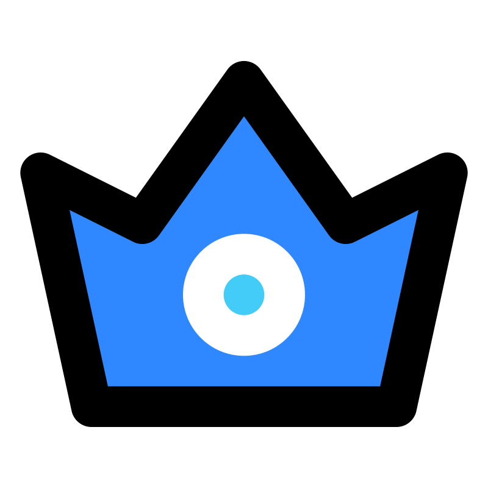 dreamina |
FlexClip |
aiease |
vidnoz |
| 費用 |
目前免費 |
免費生成4張 |
免費生成，需排隊等待 |
免費
（僅試幾張，免費限制生成次數&是否需要排隊不知） |
| 網址 |
點我 |
點我 |
點我 |
點我 |
| 描述 |
- 目前免費無限制生成次數
- 輸出像素高，符合製圖需求
- 生成結果逼真
- 有時候因為指令不夠具體還怎樣 生成的的結果不如預期
|
|
|
|
| 網站 |
imglarger |
capcut |
myedit |
| 費用 |
免費
（僅試幾張，免費限制生成次數&是否需要排隊不知） |
免費
（僅試幾張，免費限制生成次數&是否需要排隊不知） |
免費生成幾張後需要購買，每日登入可獲得3點數 |
| 網址 |
點我 |
點我 |
點我 |
| 描述 |
|
|
|
確定使用 dreamina 來生成後，以下為生成步驟：
Dreamina 生成卡通風格人像步驟
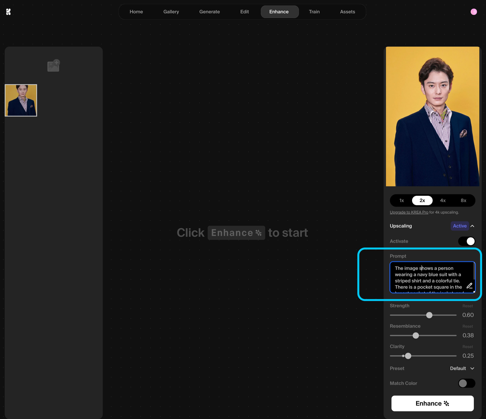
（在右側上傳圖像後，在藍色框框區所標示，會自動生成指令，拷貝指令。借用日本演員岡田將生來示範）
2.進去google 中英翻譯，貼上指令，刪除非必要指令，以我生成的經驗來說，非必要的指令會產生非預期的結果。
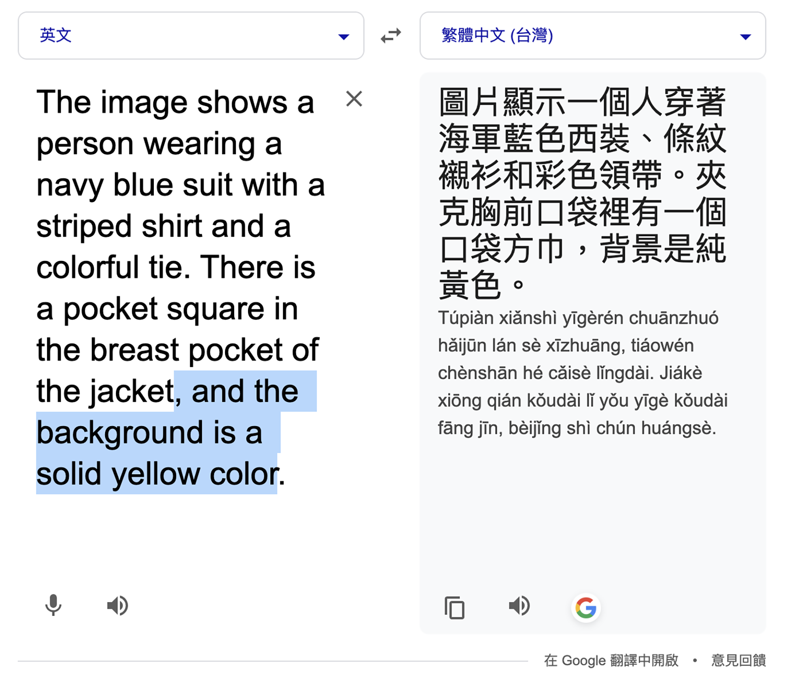
（非必要的指令為：背景是純黃色。生成的目的為產生卡通人像，背景AI會自動重新生成，這句話不是必要的。）
3.在dreamina，貼上剛剛有刪減後的英文指令，並加上“Create a highly realistic cartoon-style portrait of a male based entirely on the given photo, with a vivid and lifelike representation in a detailed and polished art style.”（
完全根據給定的照片創建高度逼真的卡通風格的男性肖像，以細緻精美的藝術風格呈現生動逼真的表現。）這段是指定要生成卡通風格，並且要依據照片原型去生成，以及產出結果要是原本的性別。為了要生成出來的風格一致，皆選擇了模型Imgage 2.1 ; 為了符合在排版畫面上的需求，所以選取比例2:3 ; 為了要與實際肖像不要落差太大，選擇參考影像中的臉部。
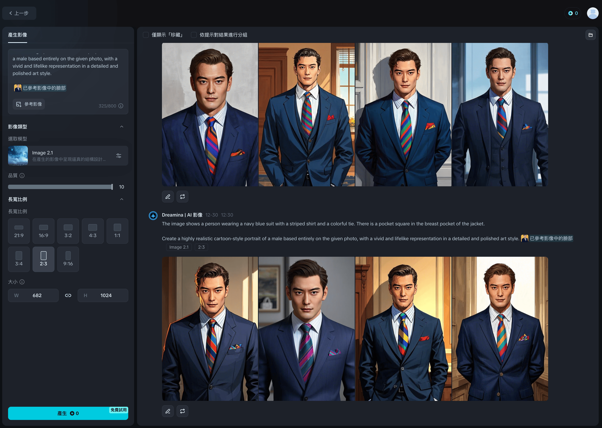
（上排為品質5,下排為品質10,可自行玩玩看比較一下，可以看出細膩程度有差異。）
4.下載任一張結果，以原圖720×1079,221KB來說，下載的圖樣是100多KB，可選擇HD會增強畫質，下載的圖樣變成3.1MB。
可選擇“局部重繪”，這次將領帶選取，改成迪士尼米奇的圖樣，提示語為：“the tie's pattern change to micky mouse, the charactor of Walt Disney's animated carttons.”總會出來比較接近想要的。
選擇”在畫布上編輯“的話，可以去背。
選擇“移除"的話“，可以將不想要的元素移除。
選擇“展開”的話，可以延伸背景。
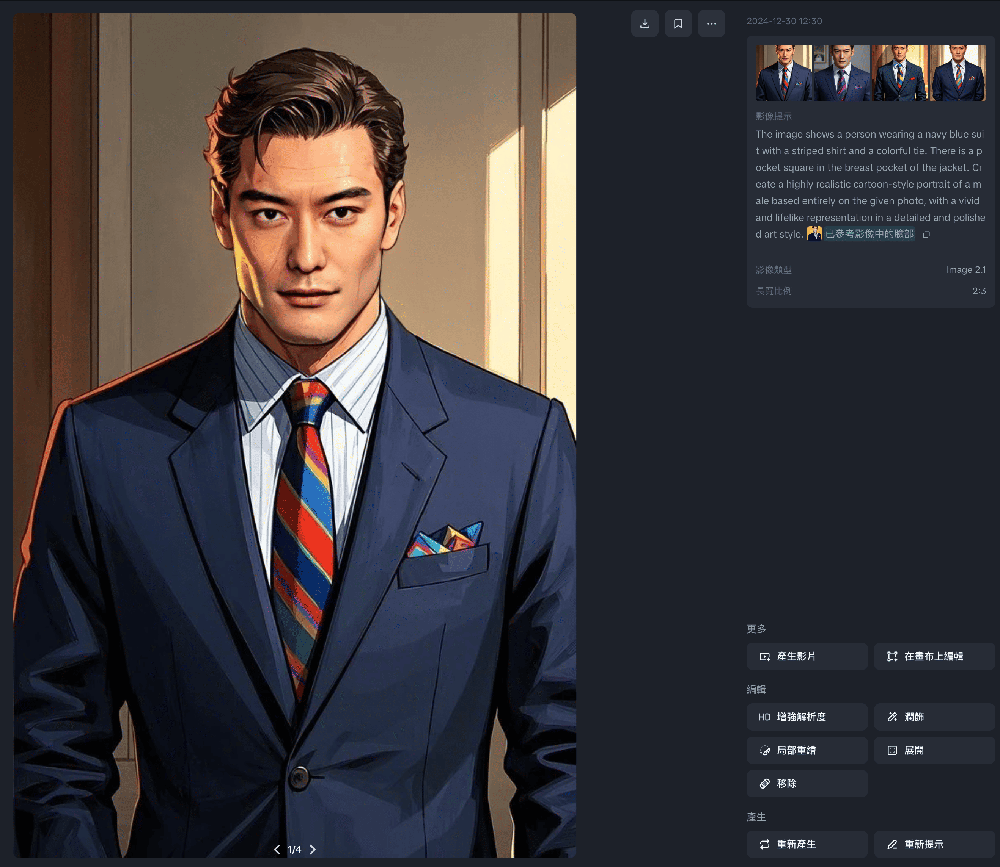
（點擊圖樣，右下方有許多調整功能可以使用。）
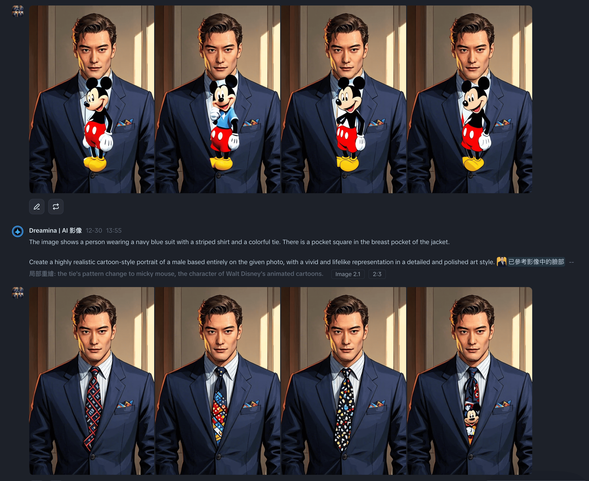
（上排為提示語未描述要改變領帶上的圖樣，下排增加了指令改變領帶上的圖樣"the tie's pattern change to..."。最右邊那張我可以了。）
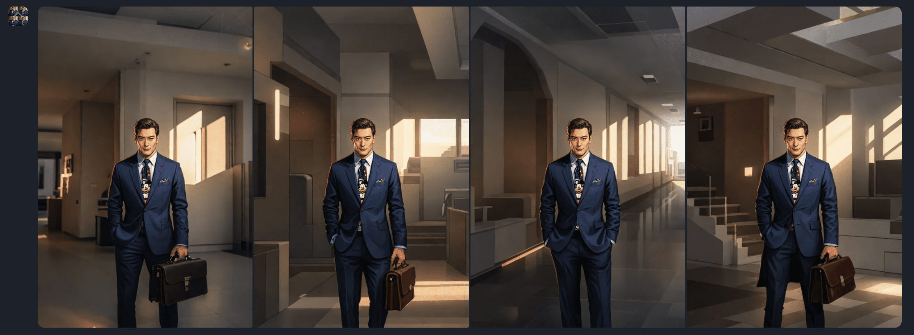
（選擇“展開”背景會延伸。）
5.若要使用上面的圖任何一張來做其他動作的延伸，並且生成結果的長相風格不偏離原本指定的圖太多，以下圖為例，要將原本站著的動作改為唱歌拿麥克風的動作，可以先將下圖放到Krea產生這張圖的生成提示詞：
“The image is a digital illustration of a well-dressed person wearing a blue suit, white dress shirt, and a colorful tie featuring Mickey Mouse and other characters. The person has a neat hairstyle and is standing in a doorway.”(
該圖像是一個穿著考究的人的數位插圖，穿著藍色西裝、白色禮服襯衫和帶有米老鼠和其他角色的彩色領帶。那人髮型整齊，站在門口。)
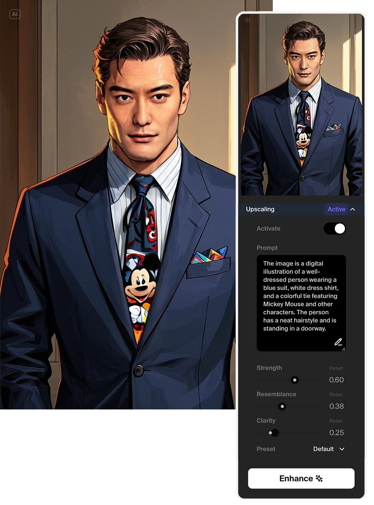
6.拷貝從KREA生成的提示詞，貼到Google的中英翻譯做調整，刪除掉不要的。
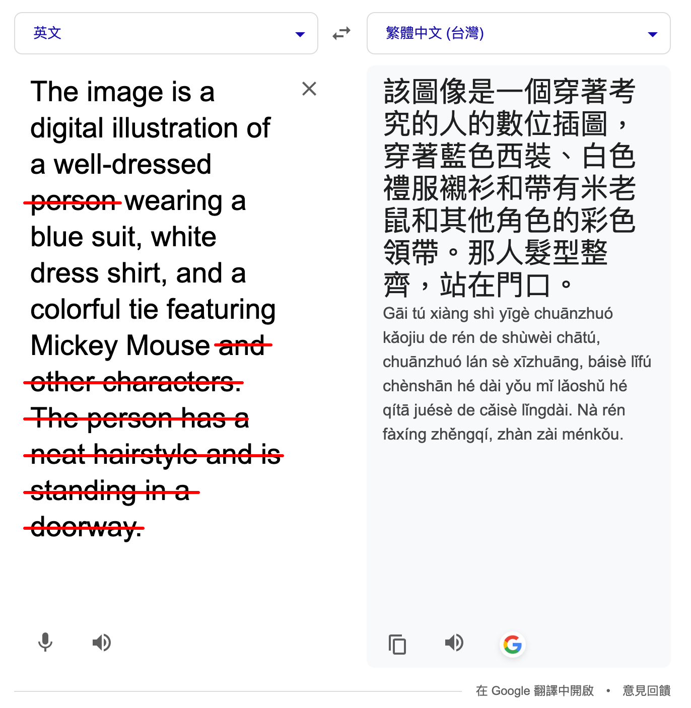
（紅色線是已刪除的，非必要的描述。person我會改為“man”，為了在接下來的生成指令一致。）
7.到Chat-Gpt選用下一個主題“Lumalabs生成短影片步驟”的第1步驟，打上"/手持麥克風的歌手"，若不清楚我在講啥，請看完本篇文章再回頭這一部分。
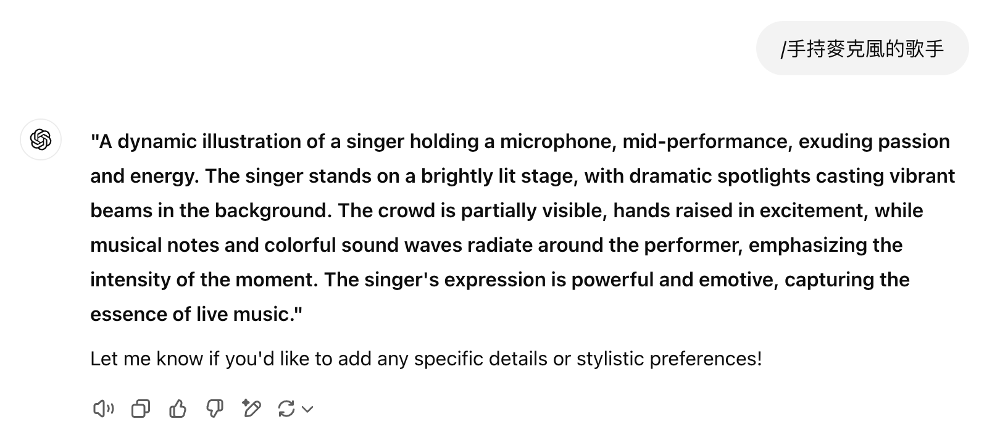
8.拷貝從Chat-Gpt生成的提示詞，貼到Google的中英翻譯做調整，刪除掉不要的。
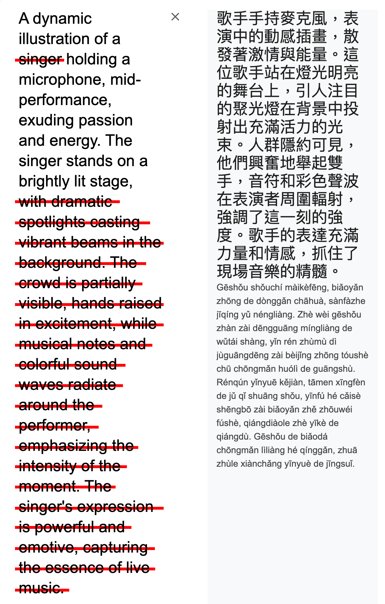
（紅色線是已刪除的，非必要的描述。singer我會改為“man”，為了在接下來的生成指令一致。）
9.提示語的部分，在最後一段，加上原先為了確定產出的畫面是完全取決於原始的圖，加上“Create a highly realistic cartoon-style portrait of a male based entirely on the given photo, with a vivid and lifelike representation in a detailed and polished art style.”（
完全根據給定的照片創建高度逼真的卡通風格的男性肖像，以細緻精美的藝術風格呈現生動逼真的表現。）”
接著就可以去Dreamina生成囉！參考圖象選擇臉部，模型選擇2.1，品質拉到10，尺寸維持2:3
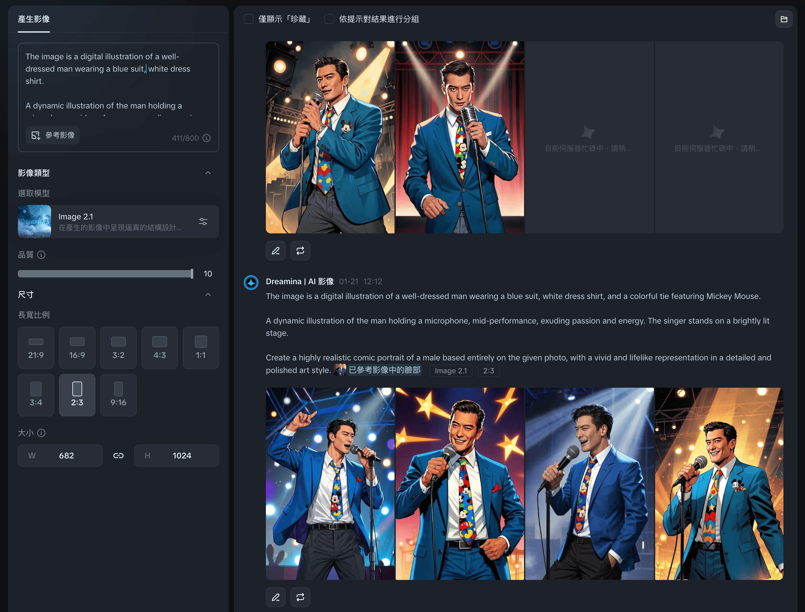
10.產出的結果，在領帶上呈現米奇的效果不是很好，拿掉關於米奇領帶的提示，重新生成，結果可以接受了。
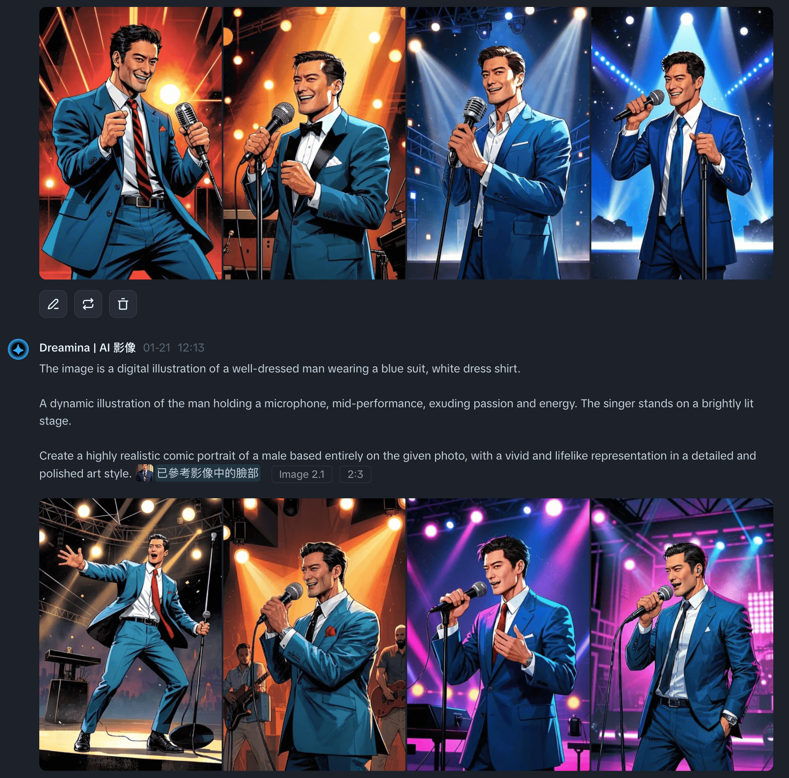
以上即為AI生成卡通風格人像的介紹，接下來來說說製作短影片的部分。同樣的，依然花了不少時間在尋找合適的，本次需求為：
- 需要將影片放到1920x1080的畫布裡，但通常免費的影片會有浮水印產生，所以生成選擇若有4:3就選擇4:3，可以蓋住在邊角的浮水印。
- 畫素不能太低，放到實際會場的LCD畫面會不清楚。
*很悲傷的是，最後AI生成影片並沒有被使用到..இдஇ
AI 生成短影片各家小小的比較
| 網站 |
viva |
runway |
| 費用 |
一個月免費生成3支，
可以切換其他帳號再使用，
下個月免費額度會重啟。 |
一個月提供125點數，約生成3支左右用完，
可以切換其他帳號再使用，
下個月免費額度會重啟。 |
| 網址 |
點我 |
點我 |
| 描述 |
- 生成結果在預期內
- 輸出像素高，符合製作需求
- 畫面精緻
- 有劇情轉折的腳本生成結果不佳
（或者是因為我還沒參透）
|
- 生成結果在預期內
- 輸出像素高，符合製作需求
- 畫面可接受
- 有分鏡的生成結果不錯
|
生成
演示 |
|
|
| 網站 |
lumalabs |
genmo |
| 費用 |
一個月限制生成20次，用完要等下個月，
可以切換帳號再用，
下個月免費額度會重啟。
（網路是寫30次，但我生20次就不能再生了。哭。） |
一個月限制生成約6支影片，用完要等下個月，
可以切換帳號再用，
下個月免費額度會重啟。 |
| 網址 |
點我 |
點我 |
| 描述 |
- 生成結果在預期內
- 輸出像素高，符合製作需求
- 畫面非常精緻
- 有時候生成結果有些破綻 看久會害怕
|
- 生成結果在預期內
- 輸出像素高，符合製作需求
- 畫面精緻
- 有時候生成結果有些破綻 看久會害怕
|
生成
演示 |
|
|
發現viva、lumalabs、genmo適合沒有劇情轉折的影片生成，而runway適合做有分鏡的影片生成。以下以 lumalabs & runway 來說明生成步驟：
Lumalabs生成短影片步驟
1.在chat-gpt輸入以下段落文字：
我正在使用一個名為Luma Dream Machine 的影像繪圖工具。我指定你成為Luma Dream Machine的提示生成器。
接著我會在想要生成的主題前添加斜線（/）。你將在不同情況下用英文生成合適的提示。例如，如果我輸入 /一位女性走在東京街頭，你將生成prompt "A stylish woman walks down a Tokyo street filled with warm glowing neon and animated city signage. She wears a black leather jacket, a long red dress, and black boots, and carries a black purse. She wears sunglasses and red lipstick. She walks confidently and casually. The street is damp and reflective, creating a mirror effect of the colorful lights. Many pedestrians walk about."
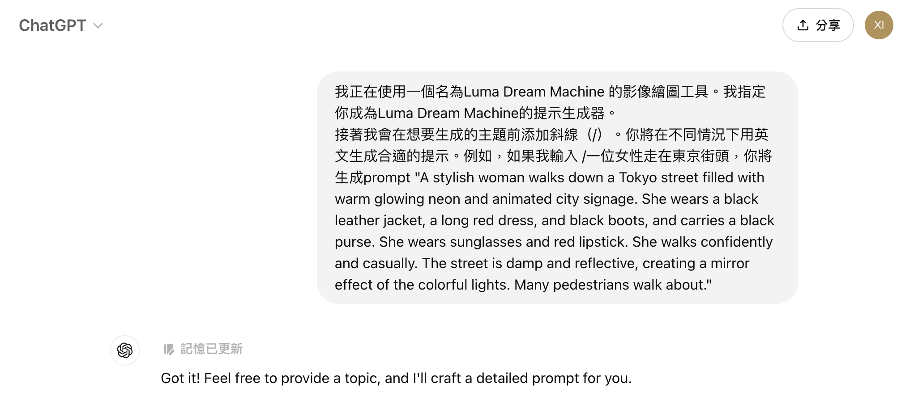
（此為觀看此視屏教學）所獲得的珍貴咒語。
2.當時有一腳本是“一個困惑的人”，直接輸入中文，Chat-Gpt桑即會生成出英文咒語，要微調可以繼續修改。
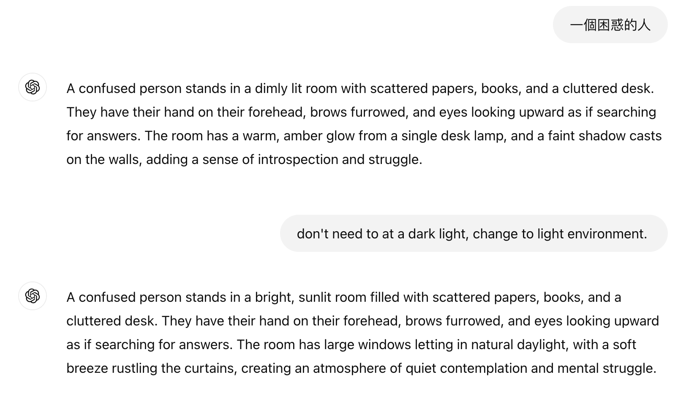
3.產出的第一組四張圖，場景昏暗，想要改成明亮的，就調整咒語並且重新生成，生成出來的第二組四張圖，選中一張後點擊“More Like this”，得到了第三組，選其中一個做影片，要做影片點擊"Ｍake Video"，結束。
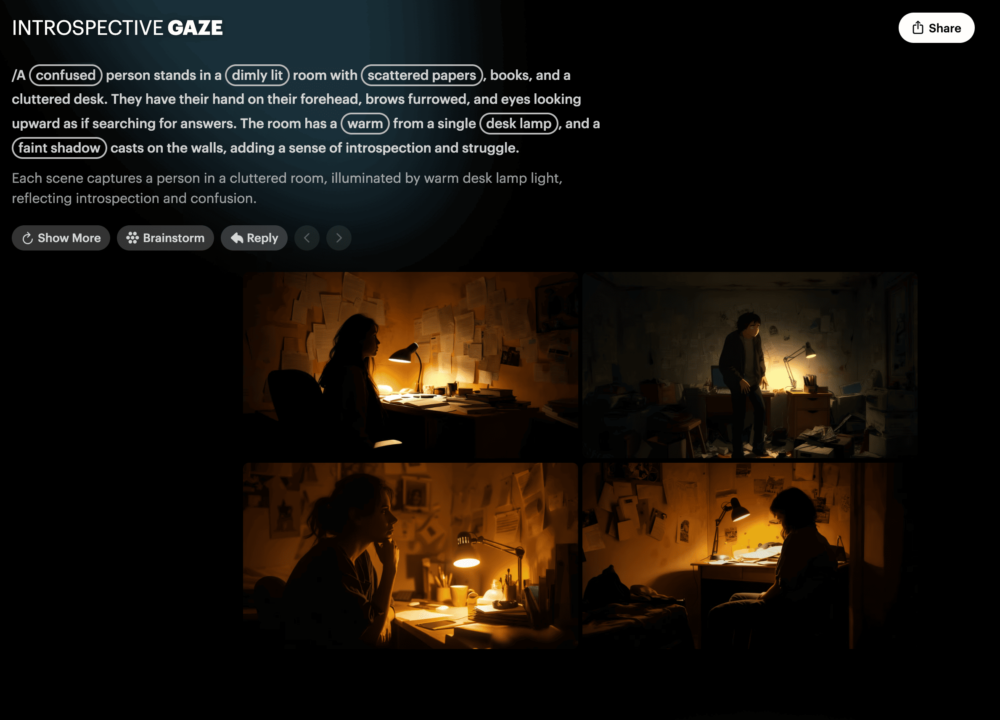
(第一組產出結果，太昏暗，在Chat-gpt上調整咒語。)
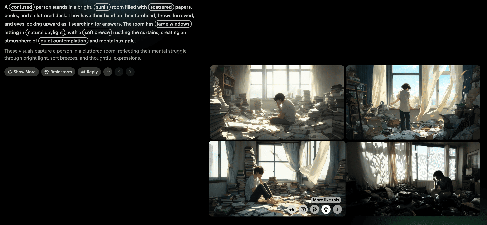
(第二組產出結果，決定要使用左下圖繼續衍生。在左下圖點擊“more like this”。）
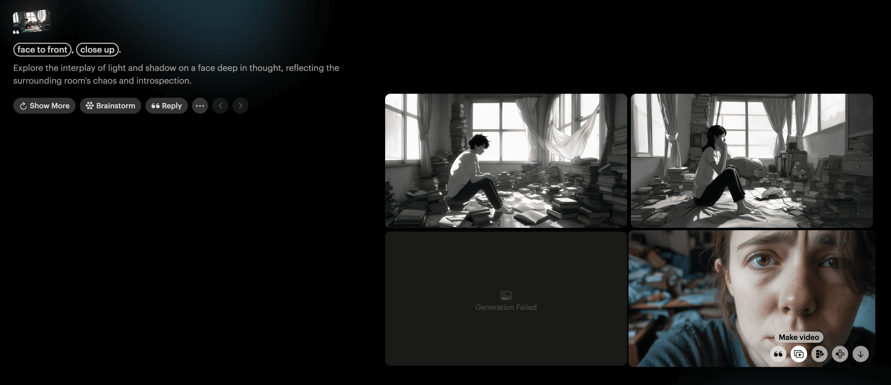
(第三組產出結果，決定要使用右下圖產生影片。在右下圖點擊“make video”。）
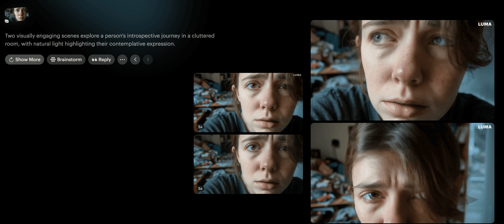
(已產出2個，若想要看更多，會花掉免費點數，可點擊“show more”。）
runway生成短影片步驟
1.在run way左側面板選擇3張圖（要1張也行），接著在選擇圖片的下方對於每一張圖輸入提示語：
picture 1 : ask questions full of doubts.
picture 2 : the woman say no.
picture 3 : the man smile.
使用的模型是Gen-3 Alpha Turbo 可以上傳3張圖，若選擇Gen-2則是單一圖。如下圖左下藍框選取處。
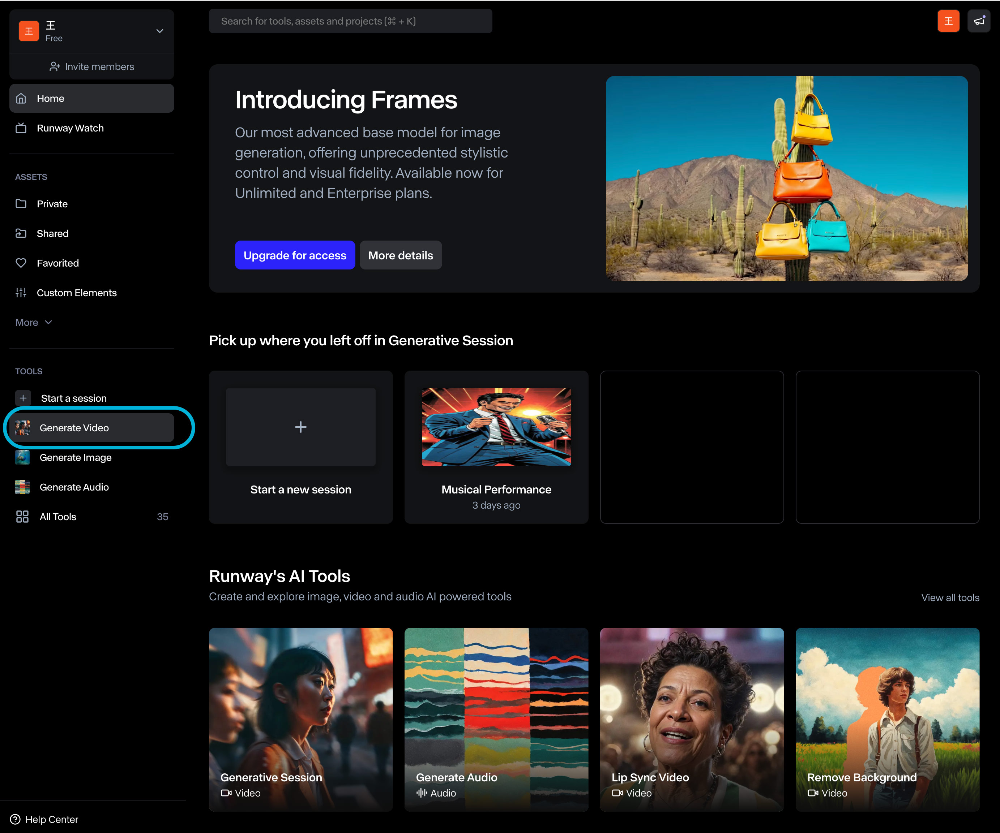
（登入後，點選左下角“Generate Video”）
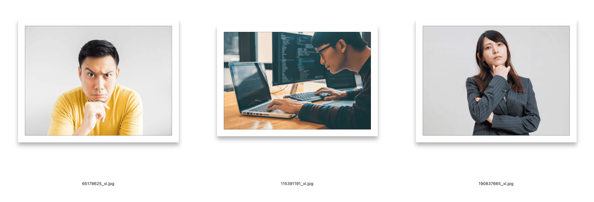
（準備好靜態圖3張。）
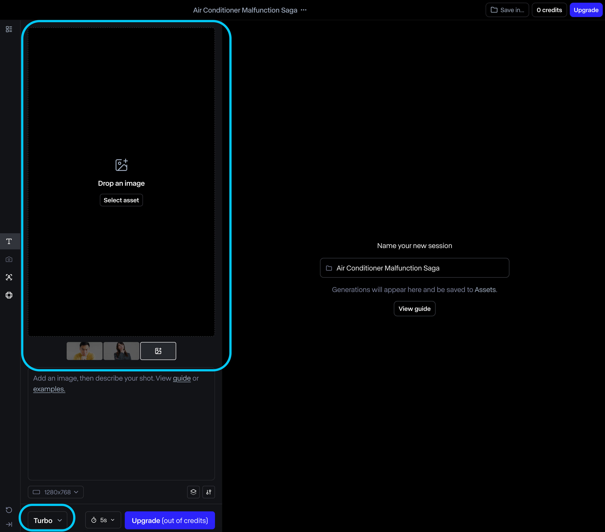
（左下角選擇模型，本次示範使用Gen-3 Alpha Turbo ; 左上角最多可放3張圖。）
2.第一回生成的影片，第一卡有不想要的東東，以及第三卡人物的右手怪怪的，修改提示語，重新生成：
picture 1 : ask questions full of doubts, only one person there.
結果總算可以接受。
3.若是要使用從Dreamina生成的靜態圖，轉為動態圖，Lumalabs 跟 runway 相較，runway在模型Gen-3 Alpha Turbo的表現較優。
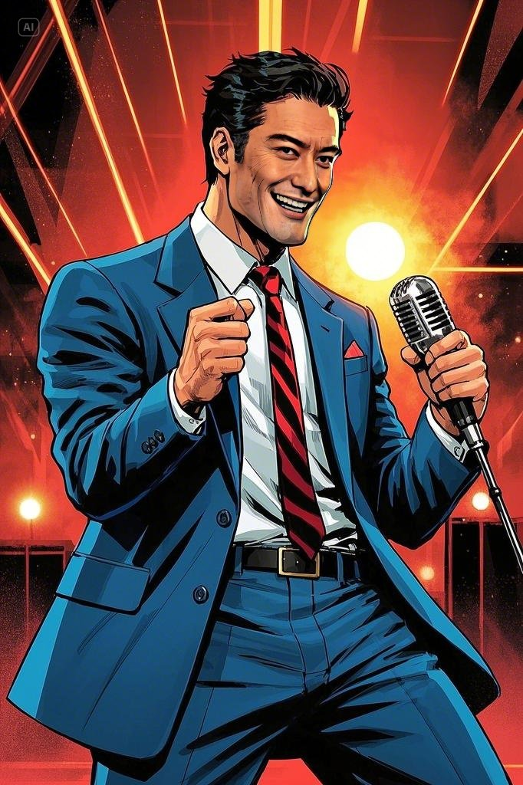
（選擇使用這張來生成動態。）
（生成提示詞為：singing! 使用runway Gen-3的結果較優。）
（生成提示詞為：singing! 使用luma的結果..。）